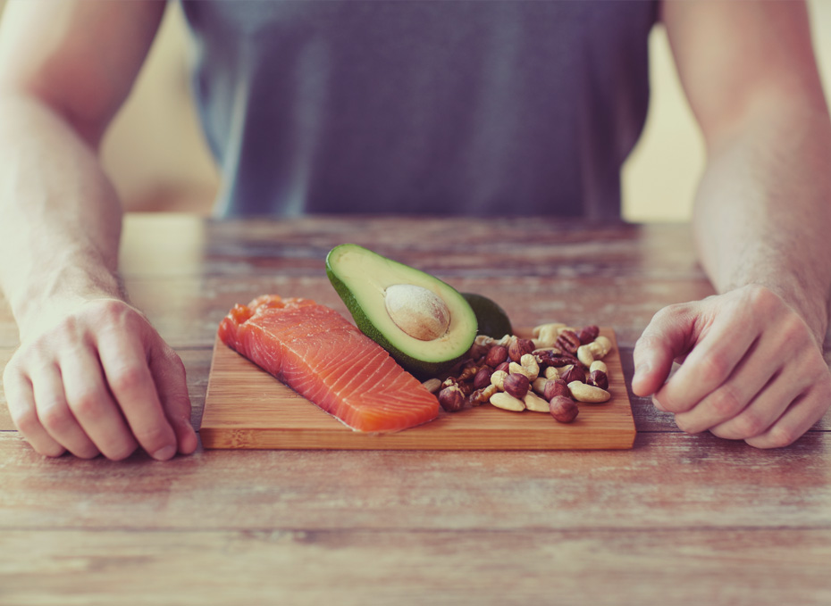
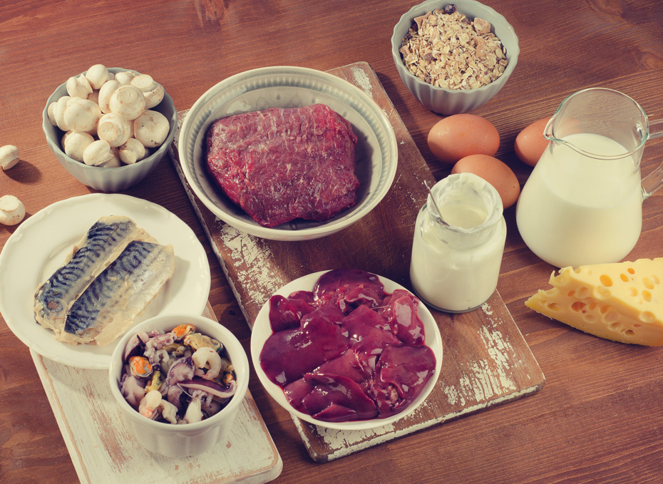

Caída del cabello
Vitaminas A y B: Indispensables para mantener un cabello sano
Desde luego, una alimentación equilibrada es lo primero que hay que tener en cuenta al momento de hablar entre la relación nutrición y cabello, donde equilibrada quiere decir una dieta que incluya todos los nutrimentos de todos los grupos de alimentos: verduras y frutas, cereales y tubérculos y productos de origen animal, y leguminosas.
Al llevar una dieta equilibrada y variada, estarás brindando a tu cuerpo vitaminas importantes que contribuyen con tu salud y esto se puede ver reflejado en un cabello hidratado y brillante.
“Consumir de forma frecuente vitaminas del grupo A y B te ayudarán a mantener un cabello saludable”
Lo mejor es que están disponibles a la vuelta de tu casa, en el mercado más cercano, durante todo el año:
Vitamina A:
Uno de los alimentos que más cantidades de vitamina A concentran son las famosísimas zanahorias; nutriólogos coinciden en que es mejor consumirlas crudas. También está presente en productos como los vegetales de color verde oscuro (por ejemplo, espinacas o el brócoli), leche, huevos, pescados e hígado de res.
Vitamina B:
Al grupo de las vitaminas B pertenece la B5 también conocida como Pantenol que, entre muchas propiedades, ayuda a prevenir que el cabello se decolore o pierda su tono original. Por otro lado, la vitamina B6 es importante en la prevención de la caída de cabello y la producción de melanina, sustancia encargada proporcionar color al cabello. Tanto la vitamina como B5 y B6 se encuentran en la levadura de cerveza, el hígado de res, cereales integrales y vísceras de los animales.
La vitamina B3, también conocida como ácido nicotínico, es otro nutrimento que favorece la circulación sanguínea. Una buena circulación sanguínea es requerida para que el crecimiento del cabello mantenga su ciclo saludable. El ácido nicotínico se encuentra presente casi en todas las carnes, pollos, pescados y también en el germen de trigo.
La Biotina también es un ingrediente perteneciente al grupo de las vitaminas B. Conocida como vitamina B8, su propiedad es la de fortalecer la producción de queratina, sustancia cuya función es la de mantener sólidos el color y brillo natural del cabello, evitar la caída y fortalecer el engranaje de algunas enzimas esenciales en los procesos de duplicación celular, funcionamiento que se requiere para que el cabello se renueve y crezca de forma natural y constante. Uno de los alimentos que más biotina concentran en su interior es la coliflor, así como casi todas las leguminosas, frijoles, habas, garbanzos, ejotes, cacahuates y alfafa.
Nutriólogos pertenecientes a la Academia Americana de Dermatología sostienen que una deficiencia en la ingesta de biotina ocasiona sobreproducción de seborrea que ocasiona el cabello graso.